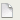

Common Tasks
Create a document
Use Timeline effects
Use symbols and library assets
Learn about the workspace
Work with imported artwork
Use drawing tools
Create symbols
Create text
Add components
Use behaviors
Create colors with the Color Mixer
Import a video
Test document performance
Publish a Flash document
Flash MX Professional 2004 Tasks
Work with screens
Create and manage projects
Use the Actions panel and Script window
Create classes with ActionScript 2
Debug your scripts